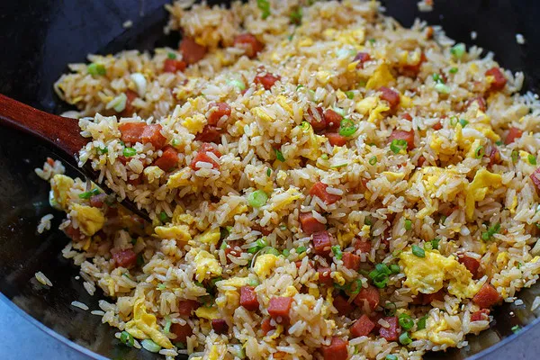

Fried Rice
It's tasty and nutrious, quick to make, and versatile! What more could you want?
Pro tip: Try swapping out the regular mushrooms for shitake mushrooms.
It takes a bit longer, but so much flavour! Swap in peas and corn for the vegies to change things up.
Go to Ingredients
Go to Method

Ingredients
- 3 Cups medium grain steamed rice
- 3 eggs lightly stirred
- 1 capsicum, finely diced
- 5 large mushrooms, finely diced
- At least 3 spring onions, finely chopped, seperating the white stems from the green
- Oil
- 5 cloves garlic, crushed, or finely diced
- One chunk ginger, finely diced
- 1 large chili, finely diced
- Soy sauce, light and dark, amount to preference
- 3 Chinese sausages sliced thinly
Method
- In a wok, on a low to medium heat, cook eggs to form an omellete, remove, slice to a desired size, and set aside
- Cook mushrooms and capsicum together, and set aside
- In the wok, cook white stems of the spring onion with the Chinese sausages, on a medium to high heat for approx. 1 minute
- Add garlic, ginger and chili, cook for a further 30 seconds to a minute
- Add back in vegetables, including green of spring onions, and soy sauces cook for a few minutes
- Add egg, and rice, stir and mix, adding more soy sauce if necessary (I mainly judge if I have added enough based on the colour of the rice)
- Cook for a few minutes
- Serve
Home page
Back to top of page